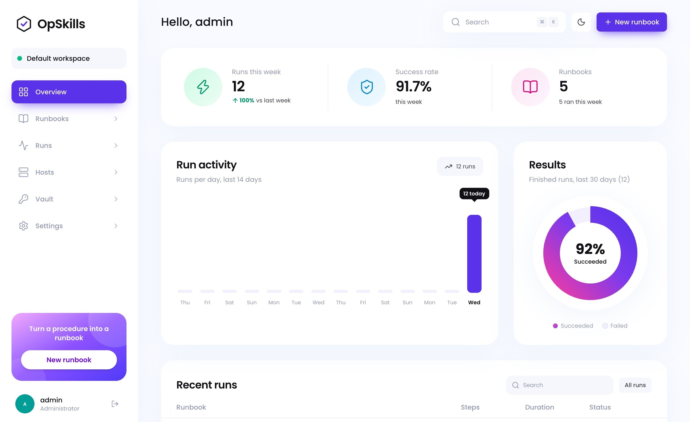
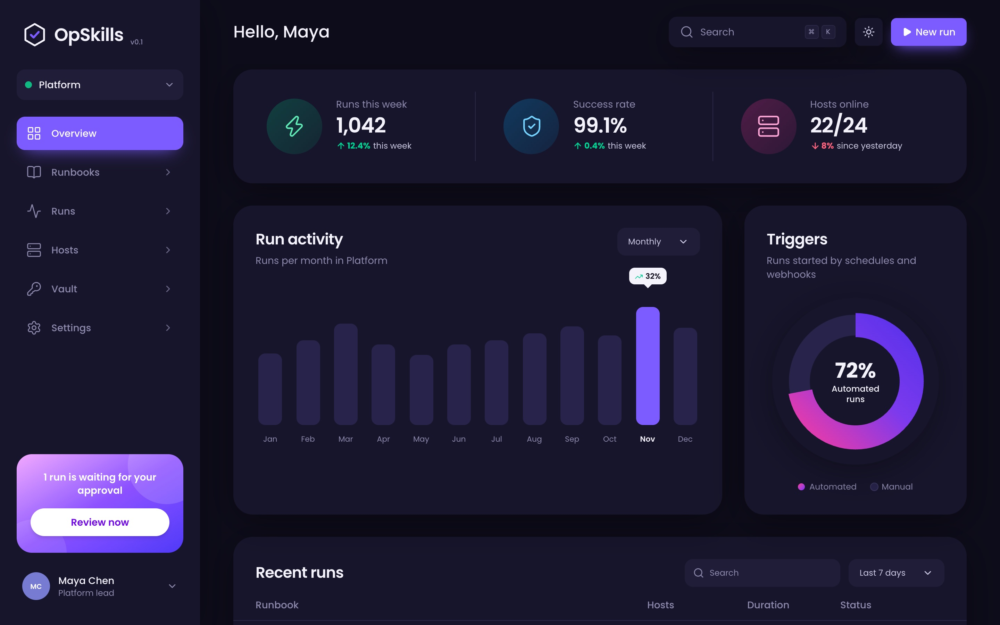

Hosts without SSH
Available nowInstall a small agent from a .deb or .rpm and enroll it with a one-time token. It connects out over HTTPS: no open ports, no keys to hand out.
OpSkills turns the procedures you repeat into safe, self-service runbooks. Write the steps once, then anyone on your team can run them and watch the output live. Every run is kept.


Write a procedure once, then let anyone on the team run it safely, with the guardrails built in.
Install a small agent from a .deb or .rpm and enroll it with a one-time token. It connects out over HTTPS: no open ports, no keys to hand out.
Stream output from every host as it happens, filter by host or step, and cancel with one click.
Run hosts one by one, in parallel or in batches, canary first, and stop starting hosts when one fails.
Pause a run until the right person signs off, then continue exactly where it stopped.
SSH keys, passwords and tokens encrypted at rest, never shown again, and masked in every log.
Run on a cron schedule in any time zone, once at a set time, or when your CI or GitHub calls a signed webhook. Hear how it went in Slack or by email.
Three steps, and the procedure that lived in someone's head becomes repeatable.
Give the runbook a name and add steps. Each step is a shell command, like the ones in your wiki page.
Steps run in order, a failing step stops the run, and each step has a timeout you choose.
Anyone signed in presses Run and watches the output stream live, step by step. Every run is kept.
name: Rolling restart: web tier description: Drain, restart and check each web host in turn. tags: [web, prod] timeout_seconds: 300 steps: - name: Drain run: ./lb drain web-01 web-02 web-03 - name: Restart run: | for h in web-01 web-02 web-03; do ssh "$h" sudo systemctl restart app done - name: Health check run: curl -fsS https://web.internal/healthz - name: Back in the pool run: ./lb undrain web-01 web-02 web-03 # runs only if every step above passed
OpSkills runs on your own infrastructure. Your hosts, keys and logs never leave it.
Pick Docker for any computer, or the Debian package for a Linux server. Both support amd64 and arm64.
Preview: sign in, keep secrets in the encrypted vault, write runbooks and run them with live output. Steps run as shell commands on the OpSkills server itself, so these steps keep it reachable from your own machine only. Runbooks can also run on hosts you enroll, on a schedule, or from scripts with an API token.
Needs Docker Desktop on macOS or Windows, or Docker Engine on Linux. Data is kept in the opskills-data volume.
docker run -d --name opskills \ -p 127.0.0.1:8080:8080 \ -v opskills-data:/var/lib/opskills \ --restart unless-stopped \ opskills/opskills:0.13.0
It's printed once, on the first start. You sign in with it, so keep it in your password manager.
docker logs opskills 2>&1 | grep 'Admin password'
Go to http://localhost:8080 and sign in as admin with that password, then choose your own. Choose New runbook, start from an example, and press Run now.
Prefer Compose? Download compose.yaml and run docker compose up -d.
For Debian 12+ or Ubuntu 22.04+. Run dpkg --print-architecture and use arm64 instead of amd64 if that's what it prints.
curl -LO https://github.com/opskills-app/opskills/releases/download/v0.13.0/opskills_0.13.0_amd64.deb curl -LO https://github.com/opskills-app/opskills/releases/download/v0.13.0/SHA256SUMS sha256sum --check --ignore-missing SHA256SUMS
Installs a sandboxed systemd service that runs as its own opskills user.
sudo apt install ./opskills_0.13.0_amd64.deb sudo systemctl start opskills
It's printed once, on the first start.
sudo journalctl -u opskills | grep 'Admin password'
On the server, go to http://localhost:8080 and sign in as admin. From your laptop, open an SSH tunnel first, then visit the same address.
ssh -L 8080:localhost:8080 you@your-server
Upgrades, backups, configuration and troubleshooting are in the full install guide. All downloads and checksums are on GitHub Releases.
The v0.13.0 preview runs real runbooks with inputs, retries and live output, on the OpSkills server or rolled out safely across every host you enroll, with a role for everyone on your team and an audit log of every change. Workspaces are next.